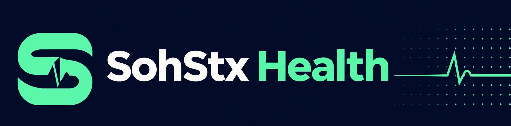

—mg/dL
No readings yet

LibreView glucose analytics, personal events, and your complete local history.
No readings yet
0 readings
70–180 mg/dL
0 total
Imported snapshots, not live sensor readings.
Tap the chart to inspect the nearest reading. Drag across the chart to explore.
Gaps longer than 15 minutes are disconnected. The timeline is based on imported data, not live updates.
Median with 10th–90th percentile band. Sparse hours are marked as unavailable.
Approx. 5-min samples
Sample-based percentages; gaps and uneven sampling may bias results.
Hourly averages use available LibreView historical readings.
GMI is a glucose-derived estimate, not a laboratory A1c. Longer observation periods improve reliability. This app does not provide medical recommendations.
Export a selected, read-only copy of your LibreView readings and events. The clinical viewer can import the JSON without connecting to your browser database. The CSV is for spreadsheets, not guaranteed EHR import.
Data stays in this browser's IndexedDB. Back up regularly, especially before changing phones or clearing site data.
Older Gluroo records remain in backups but are excluded from all V2 dashboards and exports. Only LibreView CSV imports are accepted.